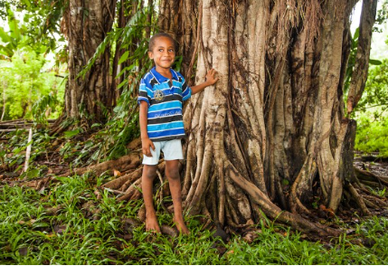

May 3, 2016
Finley’s Fund at Work

On April 22nd Finley’s Green Leap Forward Fund announced it’s third annual round of grants, bringing the total dollars awarded through her fund up to $50,000. We’d like to tell you a bit more about each of 2016’s four grantees and why their work matters.
- Catalog Choice, Finley had a personal connection to Catalog Choice, launching her own personal campaign to help her friends and their families reduce their carbon footprint through reduced junk mail. Heck, she even wrote about Catalog Choice in the college application that got her admitted to William and Mary early decision! We recently learned that Catalog Choice has been adopted and revived by the non-profit organization Story of Stuff. Even better, they are using Finley’s story to motivate others to join and support Catalog Choice. Finley’s Fund will match all donations received by Catalog Choice in the coming weeks up to $10,000. The funds will help them re-launch their website in a simplified, elder-friendly format. We’re very excited to support an effort that is reducing energy use, paper consumption, and consumption of lots of other STUFF, all with a clear connection to Finley’s spirit.
- Cool Earth. This England-based organization focuses on stemming climate change by helping indigenous populations live sustainably within the rainforest through improvement to health, education, and livelihoods. You can learn more about their unique model in this 15-minute TEDx talk. Despite being a relatively small organization, to date they have saved almost 650,000 acres of at-risk forest and protected over 154 million trees from being felled by illegal loggers. Cool Earth works with villages from Peru to the Democratic Republic of Congo and Papua New Guinea. Finley’s Fund is providing a 2016 grant of $10,000 to Cool Earth.
- Cacapon Institute. Based in Great Cacapon, WV, the institute works on projects to benefit the Cacapon River and the Chesapeake Bay it flows into, as well as the communities along it. It was one of Finley’s original grant recipients and will again receive a grant of $5,000 for its West Virginia Project CommuniTree program which promotes tree planting (which mitigates climate change!) and education on public land through volunteerism in the Potomac Headwaters of West Virginia.
- Green Belt Movement. Another of Finley’s original grantees, Green Belt Movement works to stem climate change and its impacts through locally led reforestation in Kenya and by strengthening the understanding and capacity of rural communities to take action against climate change. Like Cacapon, it will also receive a third year of funding of $5,000.
Sometimes our individual small gifts can seem insignificant and impersonal, but in the case of Finley’s Fund, nothing could be further from the truth. Each time a new gift comes into Finley’s Fund, it’s personal to us, Finley’s family and circle of friends. And in turn, the organizations that receive Finley’s grants are made up of real people who are working hard with caring individuals on the ground. In the course of doing our research we meet these leaders, talk to them about their work, and make the connection with Finley’s story. Through a chain of virtual hands, your gifts connect directly back to individual people, near and far, who appreciate and benefit. Together, we make the world a better place. Thank you.